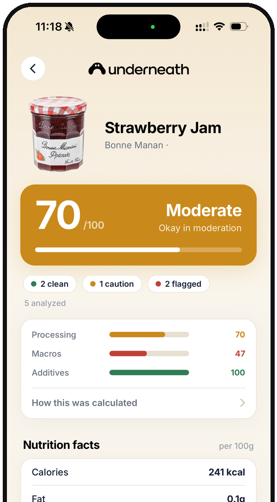

Know What's
Underneath
Scan any barcode and get one honest number out of 100, weighted by how processed a food actually is. Not by the health halo on the front of the pack.
Also on Google Play
Also on the App Store
Free to try. Built on the NOVA processing framework and published food science.

Scan It Before
You Buy It
Three steps between you and a genuinely informed choice at the shelf.
Point And Hold
Point the camera at any barcode. When a product is missing from the database, Underneath reads the printed ingredient list instead.
Read The Number
One score from 0 to 100, with the three axes broken out so you can see which one dragged it down.
Take The Swap
Higher-scoring products in the same category, so you upgrade what you already buy rather than change what you eat.
See What's
Really Inside
Processing, macros and additives are each scored on their own, then weighted into the number on the front. Nothing is hidden behind an average.

Same Shelf,
Different Story
Two toaster pastries, one aisle apart. The front of the pack reads the same. The label does not.
 22
POOR
22
POOR
 81
GOOD
81
GOOD
A better swap in one tap, ranked by how the alternatives actually score.
See It Before
You Download
This is the whole app: scan, read what is actually inside, then swap.


The Food Changed.
The Labels Did Not.
Everyday staples that used to be a handful of ingredients are now built from additives, refined starches and industrial processing. The packaging still looks wholesome.
Underneath reads the modern version and tells you, in one number, how far it has drifted from real food. The choice stays yours, you just get to make it with the full picture.
Before You
Download
Is Underneath free?
You can try it free. After the trial it is a paid subscription. That is deliberate: there are no ads, and no brand can pay to move its score, so the only thing the app answers to is you.
Will it recognise the products I actually buy?
Underneath looks up barcodes in a global food database that covers most packaged products. If yours is missing, point the camera at the ingredient list and the app reads and scores it from the label.
What does the score actually mean?
One number from 0 to 100. The nutrition carries the largest single weight at 40 percent, then how far the food sits from its whole form at 30, then the additives at 30. A product classed as ultra processed is then anchored to its processing score, which is why those scores land low. A high score means close to real food, not low calorie. The full arithmetic, including every cap, is published in the scoring methodology.
Does it work outside the US?
Yes. The underlying database is global and community maintained, so coverage is strongest for packaged food in Europe and North America and keeps improving elsewhere. The label reader works anywhere, in any language it can see.
Which phones does it run on?
iPhone on iOS 16.4 or later, and Android phones on Android 7.0 or later.
Scan Your First
Product Tonight
Take it to the cupboard you think is the healthy one. That is usually where it gets interesting.
Also on Google Play
Also on the App Store
Requires iOS 16.4 or later, or Android 7.0 or later.
We Read The Label
So You Don't Have To
Underneath is built by a small independent team who were tired of reading the front of a package one way and the ingredient list another. The true processing level of everyday food should be readable in seconds by anyone, standing in any aisle.
The scoring is grounded in the NOVA processing classification and published research on additives and ultra-processed food. We do not sell your data, and we do not take money to move a product up a score.
Questions, feedback or press: tryunderneath@gmail.com.